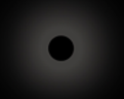

Stars are one of the most famous and known astronomical sources. We have rhymes on it, finding a constellation is an achievement to us and whenever we look up at the night sky, we hope to see these dot like structures.
But, have you ever wondered how these luminous figures are formed?
The formation of stars requires dense and cold regions. So, there are giant molecular clouds in the milky way and these clouds are very cold with a temperature of just 10-12 kelvins. These clouds contain massive interstellar matter and objects and the mass of these clouds is thousand times the mass of the sun or to about 3 million solar masses. These clouds aren’t uniform. So, some parts/ regions of the clouds are more dense than the others. These regions are known as the Clumps. Furthermore, within the clumps, there are denser and smaller regions known as the Cores. These cores are the embryos of the stars.
A star’s lifecycle is determined by its mass. The greater the mass, the shorter its life.
The amount of mass the star has is determined by the amount of matter there is in the Stellar Nebula, the giant gas that forms the star.
The gravitational energy of the core increases and begins to pull hydrogen atoms and other particles
and those particles start to spin greatly and collide with each other which raises the temperature of the core as kinetic energy is formed.
When heat is generated due to the spinning, the core becomes a Protostar.
Additionally, the surface of the protostar is thousand times larger than the surface of the sun and each square meter is radiating energy, hence, the protostar is more luminous than sun.
Moreover, as the protostar rotates due to the random motion, it generates a high magnetic field due to which a protostellar wind is generated and that leads to an outward flow of the particles surrounding the star. This clears the extra wind surrounding the star and hence the star is viewable now.
Then, when the temperature rises to as much as 1.5 * 10^7 degrees, a nuclear fusion occurs due to which the core starts to glow brightly, compresses/ contracts a bit and becomes stable.
The protostar is now known as the main-sequence star and will remain in the stage, shining for millions to billions of years. (Our sun is in the same stage right now).
However, the hydrogen atoms are converted to helium in the nuclear fusion, and when the core runs out of the hydrogen atoms, the star is no longer generating heat through the nuclear fusion and the core becomes unstable and contracts.
The outer shell of the star which is mostly hydrogen starts to expand and the core then starts cooling down and glows in red colour.
The star has now reached the Red Giant Phase.
The stage after the red giant phase is now determined with the mass of the star.
LOW MASS STARS (Like our Sun) |
HIGH MASS STARS |
|
The outer layers are expelled and they are lost in the outer space now. The left over product is just a white dwarf which has shrunk and doesn’t have any nuclear fusions/ reactions. Soon, this white dwarf turns to a black dwarf.  |
The star undergoes a massive explosion known as the supernova explosion. If the remnant is 1.4 – 3 times as massive as our sun, then the star will turn into a neutron star. Which is a small and a dense star with a very strong gravity. However, if the core still has more than 3 times the mass of our sun then the forces of gravity competes/ overcomes the nuclear forces which keep the protons and the neutrons from combining. The core is thus swallowed by its own gravity and has turned into a black hole which pulls in all sorts of matter and energy that comes near it. |